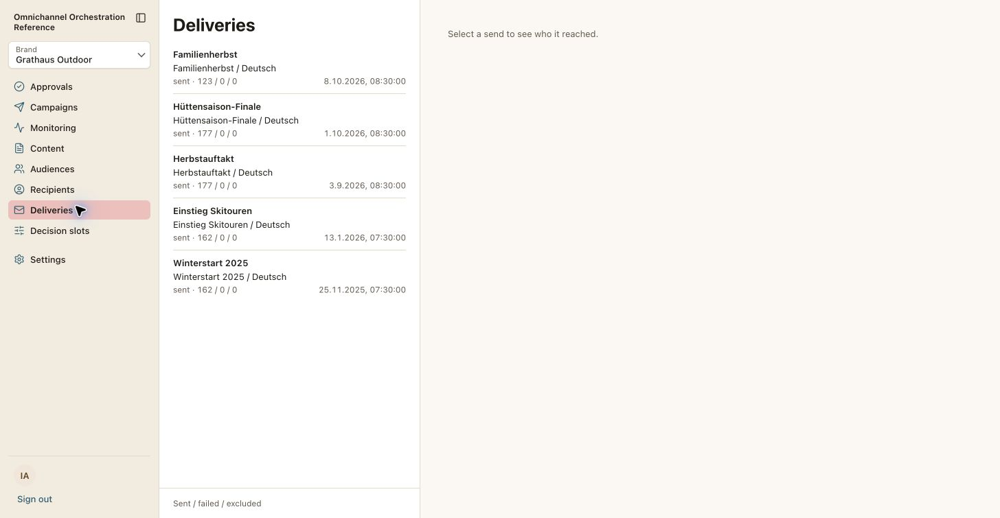
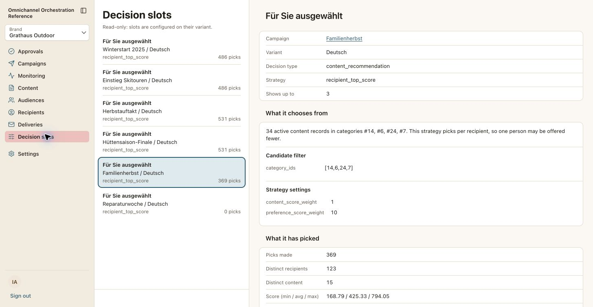
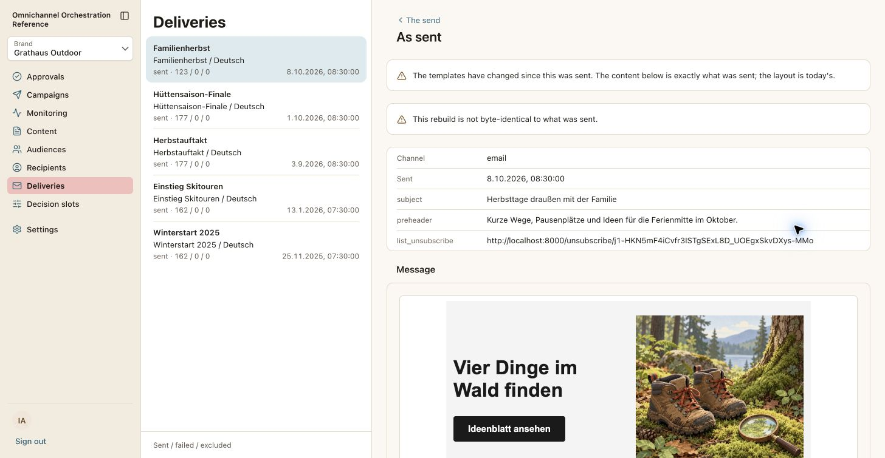

The question
0:00 to 0:14 · 14 sTeaser


- See
- Black. A low drone and a pulse, one beat a second. Three push-ins of about two seconds, each tight on one row with no navigation or chrome around it, a muted hit on each: (1) the Deliveries row
sent · 123 / 0 / 0for Familienherbst; (2) the Decision slots row "Für Sie ausgewählt, Familienherbst / Deutsch, recipient_top_score, 369 picks"; (3) one reader's "As sent" message, the email filling the frame. Then black again. - On-screen text
- "One campaign." (with shot 1) "123 readers." "369 choices." then, alone, "Could you say why?"
- Narration A
- One campaign. A hundred and twenty-three readers. Three hundred and sixty-nine choices. Could you say why each one was made?
- Narration B
- One campaign. A hundred and twenty-three readers. Three hundred and sixty-nine choices. I wanted to be able to say why each one was made.
- Sound
- Drone, pulse, three hits on the three numbers, a held half-second of silence after the question.
- Evidence
- Pillar 1 ("I can't see what the system is doing, or why"). ADR-127, ADR-183.
- Check first
- Verified on scratch and identical after two resets: 123 readers × 3 picks = 369; 15 distinct pieces of content. Say "readers" or "recipients", never "delivered" (the app shows 122 delivered). Re-read after the final reset, and do not reset again after the captures.
- Source
- Live
29-deliveries.jpg,33-slot-detail.jpg,31-as-sent.jpg.